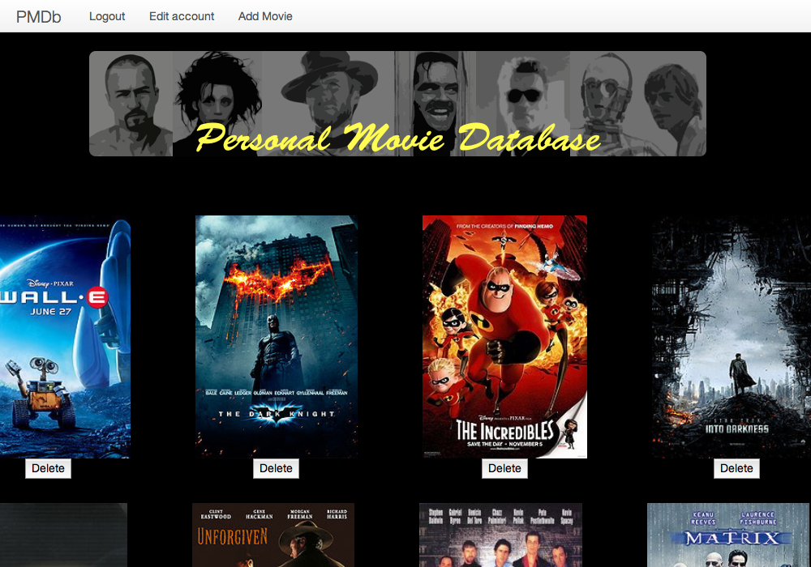
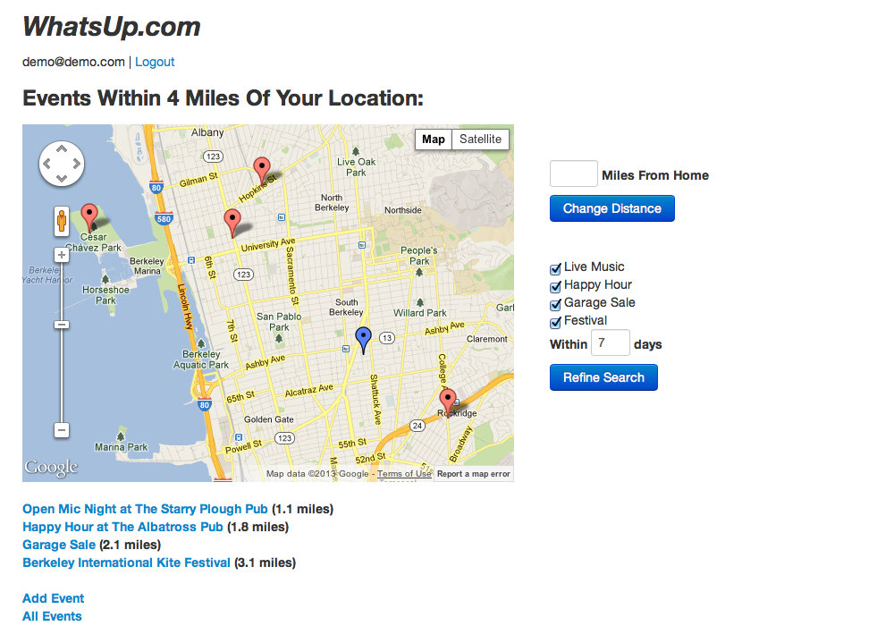

I am a Rails developer, with experience in JavaScript, and Backbone.js.
Before moving into web development, I conducted cognitive neuroscience research at Cambridge University, where I found that my attention was often most strongly drawn to the technology involved in conducting my research. Specifically, I particularly enjoyed those research projects where I got to do a lot of programming, using several niche programming languages for creating audio-visual psychology experiments, and using Matlab for data analyses.
I am currently seeking a web developer position at a Bay Area company that is doing work that improves people’s lives.
| Ruby
| jQuery |
Object-oriented design |
| Ruby on Rails
| Backbone.js
| AJAX
|
| JavaScript
| ActiveRecord & SQL
| Git
|
Project 1: Personal Movie Database (PMDb)
A Rails/Backbone app that functions as a personal movie database, to keep track of how you can access the various movies you want to see (on Netflix, AppleTV, DVD, etc.).
- Movie information obtained using RottenTomatoes API
- Movie trailers accessed through YouTube API
- Clicking on a movie poster reveals a movie information bar
- Technologies used:
- Rails, Backbone.js, JavaScript, jQuery, jQueryUI, Devise, Twitter Bootstrap, CSS
- App on Heroku
- Github
Project 2: WhatsUp.com
An event-discovery web app, where users can submit events and search for upcoming events based on several criteria (e.g., distance from home, event type, event date).
- Each event has an information page containing:
- Event location, time, etc.
- Commenting functionality, so users can comment on event
- A button to indicate whether current user will be attending event
- A total count of how many people will be attending the event
- Technologies used:
- Rails, JavaScript, jQuery, Devise, Geocoder, Twitter Bootstrap, CSS
- App on Heroku
- Github

1 - Personal Movie Database
A Rails/Backbone app for maintaining a personal movie database to keep track of how you can access the various movies you want to see (e.g., on Netflix, AppleTV, etc.).

2 - WhatsUp.com
An event-discovery web app, where users can submit events and search for upcoming events based on several criteria (distance from home, event types, days out into future).
‹
›
- App Academy (May 2013)
- Full-time, intensive, 9-week web development course in San Francisco
- University of Cambridge (August 2012)
- Ph.D. Research (All But Dissertation), Cognitive Neuroscience
- University of Oregon (December 2007)
- Master of Science (M.S.), Cognitive Neuroscience
- Oregon State University (June 2001)
- Bachelor of Science (B.S.), Computer Engineering